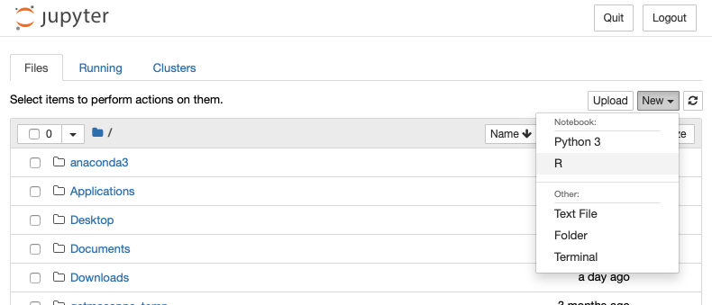

I recently found myself setting up a new computer, spinning up ~23864283.34 new projects in R, and wanting to stay somewhat organized in the process. After doing some digging, I decided to give Anaconda environments a try to have the ability to run different versions of R and do this across R on the command line, RStudio, and jupyter notebooks (IRKernel). I have decided to share my process.
Installing Anaconda
First, let’s make sure Anaconda is installed. If you do not have Anaconda, follow instructions here to install.
Once you have Anaconda installed, check the version.
conda -V
# I'm currently running v4.6.8
which conda
# Location on my computer: /Users/shu/anaconda3
Why did you make me install anaconda?
Briefly, Anaconda, or conda, is a software package manager. Anaconda will make your scientific programming life easier by facilitating software installations for many programs or packages. You can google ‘conda install for software X’, and often find a single line command to install the most recent version of that software.
Even better, Anaconda allows you to create compartmentalized computational environments (called “conda environments” in this post) where you can install any mixture of things you require without accidentally messing up other software downloads on your computer. You can use these conda environments in any number of ways– they can be program-specific (for the running of one specific tool) or project-specific (to store versions for a whole workflow). For instance, I’m working on a collaborative project which requires building bioinformatic pipelines with several different programs. It is key that my collaborator and I maintain the same versions of software, so code that we write individually can be easily shared. For this, we created and shared a conda environment. More info on getting started with conda here.
Conda environments have been widely adopted as a means of facilitating reproducible computation across the Python ecosystem– but is now expanding to include other programming languages such as R (more here).
Below, documents how I have built up conda environments to run specific versions of R, including RStudio and jupyter notebooks.
Creating a conda environment for R
First, list the conda environments you have locally:
conda info --envs
The output should list all the conda environments you have created. An asterisk will denote where you currently are, likely ‘base’. Additionally, your command line will be preceded with ‘(base)’ to denote you are in your base conda environment.
First, we will generate a specific R environment for R v3.5.1 (most recent version available through Anaconda, as of April 2019).
conda create --name r_3.5.1 -c r r=3.5.1 r-essentials
What is happening in this command?
- ‘conda create –name r_3.5.1’ creates a new conda environment that will be called ‘r_3.5.1’.
- ’-c r r=3.5.1’ specifies to use the ‘r’ channel for installation. In this particular case, we also specify r=3.5.1. Without this last part, conda will automatically install the most recent version of R.
- ‘r-essentials’, upon installing R-related packages, you need to add ‘r-’ ahead of the package name. r-essentials is a package bundle which has a lot of the most basic and commonly used R packages. A full list of packages available for conda install.
This installation will take a few minutes and at the end you should see something like the following:
pip 19.1############################################################################################################################################## | 100%
r-highr 0.7########################################################################################################################################### | 100%
r-sourcetools 0.1.7################################################################################################################################### | 100%
Preparing transaction: done
Verifying transaction: done
Executing transaction: done
#
# To activate this environment, use:
# > source activate r_3.5.1
#
# To deactivate an active environment, use:
# > source deactivate
#
Now, list your conda environments again with conda info --envs. You should now see the new environment listed:
base * /Users/shu/anaconda3
r_3.5.1 /Users/shu/anaconda3/envs/r_3.5.1
To activate your newly created R environment type:
source activate r_3.5.1
Your terminal prompt should now be preceded by your conda environment name, in this case (r_3.5.1), and the asterisk should be listed next to r_3.5.1 rather than basein the conda info --envs output.
Check that the correct R version is running
We can check the version of R in two ways.
First, launch R by typing R, you should see R version 3.5.1 (“Feather Spray”) load. IF you got an error about the “java” command-line tool, visit this site to fix it.. I got this error using anything >10.10 on Mac OS X.
The first line after typing R should be:
R version 3.5.1 (2018-07-02) -- "Feather Spray"
Copyright (C) 2018 The R Foundation for Statistical Computing
Platform: x86_64-apple-darwin13.4.0 (64-bit)
Because we created this R environment and specified r-essentials, many popular packages have already been loaded. Check this by loading some basic libraries library(ggplot2) or library(dplyr). Convenient, eh?
Quit R quit(), but don’t deactivate the r_3.5.1 environment.
Second, we can also directly check which R is being called by our $PATH in the conda environment by typing which R. This should output something like the following:
/Users/shu/anaconda3/envs/r_3.5.1/bin/R
This indicates that R is being called from the bin in your newly created conda environment (anaconda3/envs/r_3.5.1/bin/).
Keep this path in mind as we set up jupyter notebook and RStudio below, as they also need to launch R from this same location.
Creating a jupyter notebook in R
Jupyter notebook for R was included in the r-essential package download. To launch, type:
jupyter notebook
This will open the jupyter notebook home screen in browser window, showing your current directory. At the top right, you can click New and see which kernels you can use to start a notebook (hopefully, Python 3 or R).
~
Select R under the ‘New’ dropdown menu (you can also launch a Python3 notebook… but that isn’t what we are doing right now), and a new Untitled.ipynb will open. In the first cell, enter version and execute the cell (SHIFT+ENTER to execute). This should print out the version of R that the notebook is running– which should be 3.5.1. You can also ensure this R notebook is running properly by loading some R libraries.
To close the notebook, click Logout at the top right of the notebook open in your browser and/or CTRL+C in the terminal from where you launched the notebook. Close the browser windows.
One of the major issues I have encountered is Jupyter calling the incorrect path (more below).
If for some reason when you create this new notebook and you notice that the version is incorrect you can dig a bit deeper into the kernel details. To do this, you can’t use which R (as above) as that doesn’t answer where Jupyter is looking. Rather, you can use jupyter kernelspec, a command that I have found invaluable in troubleshooting any PATH issues in jupyter notebooks see twitter feed for that eureka moment.
To see what paths are being called by jupyter notebook type this:
jupyter kernelspec list --json
As an example, here is my output:
{
"kernelspecs": {
"python3": {
"resource_dir": "/Users/shu/anaconda3/envs/r_3.5.1/share/jupyter/kernels/python3",
"spec": {
"argv": [
"/Users/shu/anaconda3/envs/r_3.5.1/bin/python",
"-m",
"ipykernel_launcher",
"-f",
"{connection_file}"
],
"env": {},
"display_name": "Python 3",
"language": "python",
"interrupt_mode": "signal",
"metadata": {}
}
},
"ir": {
"resource_dir": "/Users/shu/anaconda3/envs/r_3.5.1/share/jupyter/kernels/ir",
"spec": {
"argv": [
"R",
"--slave",
"-e",
"IRkernel::main()",
"--args",
"{connection_file}"
],
"env": {},
"display_name": "R",
"language": "R",
"interrupt_mode": "signal",
"metadata": {}
}
}
}
}
This command returns the paths (resource_dir) that the jupyter notebook when opened in the r_3.5.1 environment is accessing. The key point is that you should see that resource_dir for both python and ir (read: R) kernels should be within your conda environment path (.../anaconda3/envs/r_3.5.1/...).
From my experience, a common issue I encountered was jupyter notebook trying to use an R version that was external to my environment (i.e. from an R version installed in my base environment or an old R version installed on my computer pre-anaconda). These issues manifest as IRKernel in jupyter notebook never becomes active or dying immediately after launch. This cause of this problem was revealed with the kernelspec command above.
One of the main lessons I learned in troubleshooting: don’t be afraid to destroy everything. More specifically, if you run into issues and find that one or all of these paths are not shuttling through the correct R conda environment of your choice… destroy and rebuild. Use this command (jupyter kernelspec) to locate and destroy this other R option that jupyter notebook is defaulting to (but make sure you are not deleting another whole environment!).
Opening RStudio within a conda environment
To run RStudio in our environment, we can use the single-line conda command conda install -c r rstudio. However, it is important to specify the version of R that we want to install:
conda install -c r r=3.5.1 rstudio
# As of April 2019, this installs RStudio v1.1.456
Launch RStudio by typing rstudio. The first line in the RStudio console should be the same as when we launched R from the command line directly R version 3.5.1 (2018-07-02) -- "Feather Spray". To close RStudio, you can close RStudio itself, or CTRL+C in the terminal from where you launched it.
Moreover, by creating a specific alias, we can more precisely tell RStudio to open as a specific version (within a conda environment).
First, perform a check to make sure RStudio is launching from the same location as R in this environment.
which R
# Output: /Users/sarahhu/anaconda3/envs/r_3.5.1/bin/R
which rstudio
# Output: /Users/sarahhu/anaconda3/envs/r_3.5.1/bin/rstudio
Copy the output from which R and open your bash profile (~/.bash_profile) using a text editor.
Add this line:
# R version alias
alias rstu3.5="RSTUDIO_WHICH_R=/Users/shu/anaconda3/envs/r_3.5.1/bin/R open -a rstudio"
You can then source your bash profile to add that command to your current terminal session.
# Source bash profile
source ~/.bash_profile
Make sure you are still in your r_3.5.1 environment (sourcing your bash profile may place you back in your base environment). From the command line (in your r_3.5.1 environment) you can now type rstu3.5 to launch RStudio. I highly recommend opening RStudio from the command line using this alias you created! I found it was a much more stable way to work with RStudio.
Creating a conda environment with a different R version
Alright, so this is the moment of truth: can you successfully support two different R versions on your computer with conda environments?
First, (if you aren’t already) logout of the r_3.5.1 conda environment with conda deactivate.
Let’s try installing an older version of R– 3.4.3. So, we will repeat the above instructions to create a new environment, but specify R– 3.4.3.
# Create new R environment with R version 3.4.3
conda create --name r_3.4.3 -c r r=3.4.3 r-essentials
# Enter environment
source activate r_3.4.3
Now, we can do the same checks that we did above. First, launch R on the command line and then spin up a jupyter notebook with an R kernel to check that they are both running R v3.4.3.
Next, reinstall RStudio with R v.3.4.3
# Install RStudio
conda install -c r r=3.4.3 rstudio
And then ensure that you are running the correct version by opening RStudio from the command line (rstudio).
You should then double check the paths of R and rstudio within this environment:
# Check outputs
which R
# Output: /Users/shu/anaconda3/envs/r_3.4.3/bin/R
which rstudio
# Output: /Users/shu/anaconda3/envs/r_3.4.3/bin/rstudio
If all things check out:
[x] Correct R version in command line
[x] Correct R version in RStudio
[x] Correct R version in Jupyter Notebook
[x] Path of R aligns with your specified conda environment
[x] Path of rstudio aligns with your specified conda environment
You can safely go ahead and create a new alias within your .bash_profile :
alias rstu3.4="RSTUDIO_WHICH_R=/Users/shu/anaconda3/envs/r_3.4.3/bin/R open -a rstudio"
Finally, now when you list your conda environments conda info --envs you will see both new R environments.
# conda environments:
#
base /Users/shu/anaconda3
r_3.4.3 * /Users/shu/anaconda3/envs/r_3.4.3
r_3.5.1 /Users/shu/anaconda3/envs/r_3.5.1
What other R versions are available for conda install?
To check out other available R versions built through conda you can search the R channel using conda:
conda search -c r r
Installing R packages
To install other R packages, rather than use ‘install.packages()’ in the R console, I recommend googling conda + PACKAGE-NAME or searching the conda R channel (conda search -f r-PACKAGENAME) for the package you want to install. When you are ready to install a package, make sure you are in the conda environment with whatever R version you want the package installed and type conda install -c r r-PACKAGENAME. This approach to R package installs is life changing, especially if you’re all too familiar with non-zero exit status or random failures when attempting to install R packages.
You can also view your list of installed R packages in your environment, conda list r-.
Conda channels for R package installation
Some package groups require installation through a different conda channel. Two of the main ones I use are bioconductor Bioconda and conda-forge.
To set this up, configure your R environment by executing these commands in this exact order:
# Type these commands in this exact order:
conda config --add channels defaults
conda config --add channels bioconda
conda config --add channels conda-forge
To install a package using one of these channels, use “-c” in the conda install command. For instance to install compositions and cowplot, you need to use the conda-forge channel. See install information here.
conda install -c conda-forge r-compositions
conda install -c conda-forge r-cowplot
Other examples which require Bioconda:
conda install -c bioconda bioconductor-decontam
conda install -c bioconda bioconductor-deseq
conda install -c bioconda bioconductor-edger
Final thoughts
Don’t be afraid of destruction. Behind the scenes of this post, I completely removed and re-installed Anaconda on my computer at least twice and created and then deleted numerous environments. Starting with a clean slate turned out to be necessary.
Another reason to not shy away from destruction is that it is a way towards a more reproducible work process. After deleting and reinstalling Anaconda (and every other conda environment to my name), I was able to easily reinstate the environment my collaborator and I share with no issues (you can rebuild!). And now, I can return to whichever R version I need for a given project by navigating between my R conda environments. How much fun is it to be organized?.
Anaconda was built with Python in mind. My motivation for this post was that it was difficult to find a working solution to partition R versions using conda environments (especially in conjunction with IRKernel and RStudio). Anaconda seems to work more succintly with python; as an example, I found that some older versions of R were not as stable as others. But R support is constantly growing! Also, check out the newly released RStudio 1.2, which will support Python
There’s more than one way to do this. If you have another solution or addition - let me know!